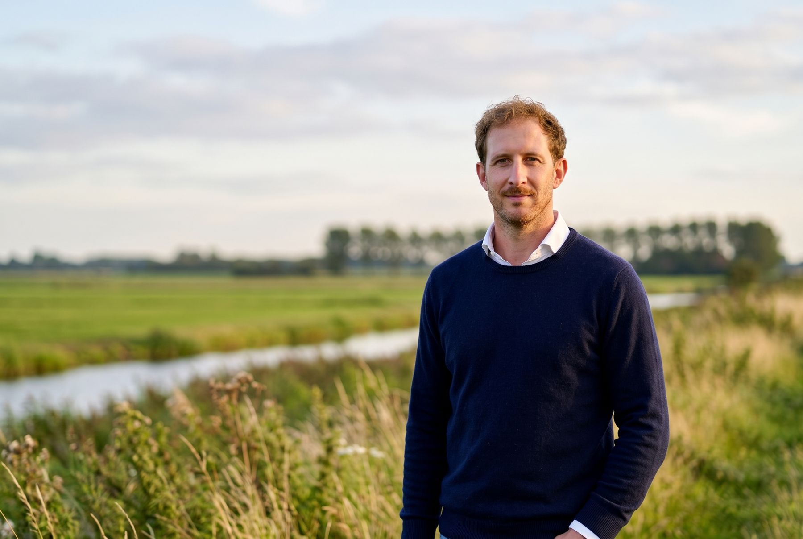
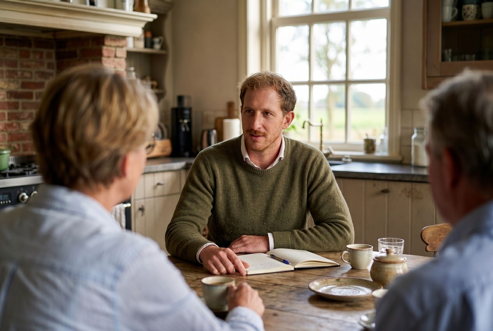

Lang leven
Gaat je geld net zo lang mee als jij?
Wanneer kun je stoppen of afbouwen, en wat doe je op de maandag erna? Pensioen, vermogen en wonen in één overzicht, doorgerekend tot op hoge leeftijd.
De meeste financiële gesprekken beginnen bij wat je hebt. Dit gesprek begint bij waar je voor leeft. Daarna rekenen we uit of het klopt, ook als het leven anders loopt.
Waarvoor doe je het? Elke zondag één vraag, één inzicht en één stap voor die week. Mijn nieuwsbrief op LinkedIn.
Abonneren op LinkedInGesprekken in de buitenlucht, bij je thuis, in Wolphaartsdijk of online.

Eerst één vraag
En wat zou er nodig zijn om dat cijfer één punt hoger te maken? Daar begint het gesprek.
Vragen die ik aan de keukentafel hoor
Drie scenario's
Niemand weet hoe zijn leven gaat. Je kunt wel weten wat er gebeurt in elk van de drie scenario's. Daar begint rust.
Lang leven
Gaat je geld net zo lang mee als jij?
Wanneer kun je stoppen of afbouwen, en wat doe je op de maandag erna? Pensioen, vermogen en wonen in één overzicht, doorgerekend tot op hoge leeftijd.
Kort leven
Weten je naasten waar alles staat?
Wat erven je partner en kinderen, wat laat je na, en past je testament nog bij het leven dat je nu leidt? Goed geregeld is ook: de ander weet waar het dossier ligt.
Rot leven
Wat vangt je op als het tegenzit?
Langdurig ziek, arbeidsongeschikt, een bedrijf dat stopt of een relatie die eindigt. Hoeveel maanden kom je door, en wat ontbreekt er nog in je vangnet?
Het 4R-model
Een huis kopen, een bedrijf verkopen, eerder stoppen, de kinderen helpen. Ik toets elke grote keuze op dezelfde vier vragen. Zo zie je waar hij het eerst gaat wiebelen.
Waar leef je voor, en dient deze keuze dat?
Eerst je levensdoelen, in je eigen woorden. Pas daarna de cijfers.
Houdt het stand bij een lang, kort of rot leven?
Elk scenario doorgerekend, met wat er nog ontbreekt in je vangnet.
Past het in wat je elke maand volhoudt?
Een plan werkt pas als het in je gewone maand past, zonder wilskracht.
Wat is genoeg, en wat mag er nu al?
Genoeg in een bedrag en een jaartal. En wat je niet langer hoeft uit te stellen.
Wanneer een keuze standhoudt
Een keuze houdt stand als hij richting heeft, rust bewaart, in je ritme past en ruimte laat.

Over mij
Onmacht omzetten in kracht.
Dat heb ik jarenlang mogelijk gemaakt. Eerst bij Stichting KiKa. Daarna met een eigen adviesbureau, dat ik na vier jaar verkocht. Ik werkte voor doelen in binnen- en buitenland, van dierenwelzijn tot zelfmoordpreventie, van het Wereld Natuur Fonds tot Greenpeace België. En toen bij KWF, in het managementteam van het grootste goede doel van Nederland. Ik zat aan veel keukentafels waar het ging over geven en nalaten.
Ik had een mooi appartement in Amsterdam Oud-West, speelde voor het nationale rugbyteam en had een goed salaris. En van binnen was ik een lege huls. Eén vraag duwde ik steeds weg: waarvoor doe je dit?
In 2023 ging ik terug naar Zeeland, om voor mijn oma te zorgen. In diezelfde tijd stond ik met een camera in de verloskamer toen mijn neefje werd geboren. Het rijke, volle leven van mijn oma. Het prille leven van mijn neefje. En alles daartussen. Toen wist ik het: het leven zit niet in wat je hebt, maar in waar je voor leeft.
Nu woon ik weer in de polder waar ik geboren ben en coach ik jonge mannen bij de rugbyclub waar ik zelf begon. Daar leer ik elke week opnieuw: je wint zelden met het mooiste gameplan, wel met spelers die weten wat ze doen als het tegenzit. Met geld werkt het net zo.
Mijn credo
Liever zijn dan lijken.
Van buiten klopte alles. Het appartement, het rugbyteam, het salaris. Het leek goed. Maar het was het niet.
Sindsdien vraag ik mezelf niet meer hoe iets eruitziet, maar of het mij dient. Dat betekent het zware werk eerst doen: mezelf eerlijk aankijken. Nee zeggen tegen wat niet bij me past. En mijn eigen maatstaf houden, niet die van een ander.
Dat vraag ik ook van een plan. Een plan dat er goed uitziet, is niet genoeg. Het moet kloppen met je leven, ook als dat anders loopt. Ik hoef de verandering niet voor je te maken. Ik help je die zelf te maken, en er rust in te vinden.
Jarenlang vocht ik tegen wat buiten mijn macht lag: kanker, armoede, de dood. Nu werk ik aan wat je wel in de hand hebt: je keuzes en het leven dat je ermee maakt.
Werkwijze
Van intake tot een plan dat je kunt volhouden. Daarna, als je wilt, een vaste planner.
Een vaste prijs, vooraf op papier. In euro's, inclusief btw, in de opdrachtbevestiging.
Ik werk alleen voor jou. Ik verkoop geen producten en ontvang van niemand provisie.
Wat je van mij mag verwachten
We kijken samen of je vraag bij mijn werk past. Past het, dan krijg je een opdrachtbevestiging met inhoud, planning en vaste prijs, samen met mijn algemene voorwaarden en privacyverklaring. Past het niet, dan zeg ik dat en wijs ik je waar mogelijk de weg.
We beginnen bij wat je wilt met je leven. Daarna brengen we je inkomen, vermogen, pensioen, wonen en wat er al geregeld is in kaart.
Ik laat zien waar je staat en wat er gebeurt bij een lang, kort of rot leven. Samen maken we de laatste keuzes: wat is genoeg, wat mag er nu al en wat regel je.
Waar je staat, wat er gebeurt in elk scenario, welke keuzes je maakte en wat je gaat regelen. Een naslagwerk om op terug te vallen. Jij beslist en voert uit; waar een product nodig is, verwijs ik naar een adviseur met vergunning.
Wat leeft er nog? We nemen je vragen bij het plan door en kijken hoe de eerste stappen gaan.
Daarna: het abonnement
Voor personen, gezinnen en families die een most trusted advisor willen: iemand die hun verhaal kent en het geheel overziet.
Voor wie
Mensen rond en na hun veertigste die hun leven opnieuw inrichten. Je hebt iets opgebouwd. De vraag is nu waarvoor.
Ik ben een gesprekspartner die altijd jouw leven op één zet. Ook als een ander het uitvoert, help ik je je vraag helder te krijgen en af te stemmen op jouw leven.
Drie manieren
Van een nieuwsbrief op zondag tot een planner die jaren met je meeloopt.
Zelf lezen
Elke zondag schrijf ik Waarvoor doe je het?, mijn nieuwsbrief op LinkedIn: één vraag, één inzicht, één stap voor die week. Daarnaast doe ik de eindredactie van Goed Geregeld op Zaterdag, de nieuwsbrief van Maurice van den Hemel.
Samen met anderen
Een groep leert de vier poorten zelf hanteren, in een paar weken en met één poort per week. Ik ontwerp ze ook voor organisaties die dit hun ondernemers, leden of medewerkers willen bieden.
Eén op één
Van intake tot visiegesprek, met een uitgebreid plan en naslagwerk voor privé, onderneming en vermogen samen. Daarna kun je een abonnement nemen: dan ben ik je vaste planner, ook op moeilijke momenten.
Veelgestelde vragen
Een plan dat begint bij je leven en pas daarna bij je geld. We brengen in kaart wat je wilt, waar je nu staat en wat er gebeurt bij een lang, kort of rot leven. Inkomen, vermogen, wonen, werk, stoppen met werken en nalaten komen samen in één plan, voor privé en onderneming tegelijk.
Een adviseur of bank helpt je meestal aan een product: een hypotheek, een verzekering, een belegging. Ik verkoop geen producten, bemiddel niet en ontvang geen provisie. Jij bent de enige die mij betaalt. Daardoor kan ik naar het geheel kijken en zeggen wat ik zie.
Nee. Ik heb geen vergunning op grond van de Wet op het financieel toezicht en beveel geen producten van een bepaalde aanbieder aan. Ik laat zien welke keuzes er zijn en wat ze betekenen voor je plan. Komt een product aan de orde, dan verwijs ik naar een adviseur met vergunning.
Ja. Bij ondernemers lopen privé en zaak door elkaar, dus ik kijk naar beide: je inkomen, het bedrijf als vermogen, een mogelijke verkoop en wat er gebeurt als jij uitvalt. Fiscale en juridische uitwerking doen je fiscalist, accountant of notaris.
De kennismaking kost niets. Voor een traject spreken we vooraf een vaste prijs af, inclusief btw, vastgelegd in de opdrachtbevestiging. Wie daarna een vaste planner wil, kiest voor het abonnement.
Een traject bestaat uit een intake, een inventarisatie en een visiegesprek. Daarna krijg je je plan en naslagwerk, en als je wilt volgt twee weken later een servicegesprek. De gesprekken duren zo lang als nodig: soms een uur, soms drie. Hoe snel ze elkaar opvolgen, hangt af van je agenda en van hoe snel de gegevens er zijn. De planning leggen we samen vast.
CFP is de hoogste certificering in mijn vak. Ze is niet verplicht om als financieel planner te werken, maar ik vind het belangrijk. Ik volg de opleiding tot Certified Financial Planner en voer de titel pas na certificering. Elk plan wordt voor oplevering gelezen door een tweede planner die wel gecertificeerd is.
Nee. Ik woon in Wolphaartsdijk en kom graag bij je thuis of ga met je naar buiten, in heel Zeeland: van Goes en Middelburg tot Zierikzee en Vlissingen. Binnen 30 kilometer reken ik geen reiskosten. Gesprekken kunnen ook via video, dus je kunt overal in Nederland met me werken.
Graag zelfs. Veel keuzes maak je samen, dus voer ik de gesprekken met jullie allebei en krijgen jullie allebei alle stukken. Lopen jullie belangen tijdens het traject uit elkaar, dan zeg ik dat en zetten we het werk stil tot jullie weten hoe verder.
Naast mijn praktijk ben ik adviseur grote giften en nalatenschappen bij Het Zeeuwse Landschap. In je plan behandel ik schenken en nalaten neutraal. Ik stuur je nooit naar een organisatie en ontvang van niemand een vergoeding. Zie ik een belangenconflict, dan meld ik dat en verwijs ik door.
Ik behandel alles vertrouwelijk en verwerk niet meer dan nodig is. Een burgerservicenummer verwerk ik nooit. Gesprekken neem ik alleen op als je daar aan het begin mee instemt. Alles staat in mijn privacyverklaring onderaan deze pagina.
Kennismaken
Vertel in een paar zinnen waar je staat en wat je bezighoudt, per mail of telefoon. Dan stel ik een moment voor.
Telefoon
Waar
Gesprekken in de buitenlucht, bij je thuis, bij mij in Wolphaartsdijk of via video. Binnen 30 kilometer reken ik geen reiskosten.
Stuur geen burgerservicenummer, gezondheidsgegevens of financiële documenten per e-mail. Daar is in een traject een beveiligde weg voor.